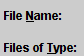
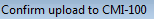
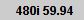
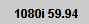
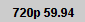
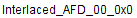

#Launch Norpak Signal Generator Dashboard application with the option to load sd/hd metadata
#This script assume that the Java GUI is already running.
#"C:\Program Files (x86)\DashBoard\DashBoard.exe"
#inputs: norpakCmd=[] norpakMetaFile=[] norpakMetaDir=[] norpakWaitTime=[default=60]
#input: norpakMetaFile = [SD_MetaData.bin, HD_MetaData.bin, etc]
#input: videoFormat = [480i59.94 576i50 720p59.94 720p50 1080i59.94 1080i50
#Usage: norpak_launcher.sikuli norpakCmd=[] norpakMetaFile=[] norpakMetaDir=
#Usage: norpak_dashboard.sikuli videoFormat=[] afdValue=[0..15 or 0..F]
###############################################################
#common code for every sikuli code. Do not remove this section
from commonlib import *
import re
###############################################################
#YOUR code start here
###############################################################
#This is your check for the inputs that you are expecting.
def Check_args():
#checking for required arguments
if not Get_arg('norpakCmd'):
my_norpakcmd = 'C:\\Program Files (x86)\\DashBoard\\DashBoard.exe'
Set_arg('norpakCmd', my_norpakcmd)
Print_debug('Norpak Dashboard App Command is not given. Will use default: ' + my_isolocmd)
if Get_arg('norpakMetaFile'):
my_metafile = Get_arg('norpakMetaFile')
if not re.search(r'\\', my_metafile):
if not Get_arg('norpakMetaDir'):
my_metadir = getBundlePath()
Set_arg('norpakMetaDir', my_metadir)
my_metafile = Get_arg('norpakDir') + '\\' my_metafile
if os.path.exists(my_metafile):
Set_arg('norpakMetaFile', my_metafile)
else:
Exit_program(my_metafile + ' is not existed.', 2)
if Get_arg('videoFormat'):
Check_arg('afdValue')
Check_args()
############################################################
#Main program definitions code start from this point
#Any global variables here
NorpakDashboardTitle = 'DashBoard'
my_waittime = Get_arg('norpakWaitTime')
#Any definitions are here
def Launch_Dashboard():
'''Start Norpak Dashboard
'''
#First check if the app is already running
mycmd = 'auto_windows_manager.exe windows_title=\"' + NorpakDashboardTitle + '\" windows_action=2'
my_status = Run_cmd(mycmd)
Print_debug(my_status)
if int(my_status) == 0:
Print_debug(NorpakDashboardTitle + ' is already running. Use current session.')
else:
#First find out if Isolo is already running or not
my_norpakcmd = Get_arg('norpakCmd')
my_app = openApp(my_norpakcmd)
Print_debug('Waiting for Norpak Dashboard software to come up... ' + my_waittime)
wait(, int(my_waittime))
if exists():
mycmd = 'auto_windows_manager.exe windows_title=\"' + NorpakDashboardTitle + '\" windows_action=2'
my_status = Run_cmd(mycmd)
if int(my_status) == 0:
Print_debug(NorpakDashboardTitle + ' launched successfully.')
else:
Exit_program(NorpakDashboardTitle + ' failed to launch successfully.')
#launch the main Norpak Dashboard software
def Load_MetaFile():
if Get_arg('norpakMetaFile'):
my_metafile = Get_arg('norpakMetaFile')
find(Pattern().exact()); click(Pattern().exact())
wait(); click(Pattern().similar(0.90).targetOffset(165,-13)); type("a", KEY_CTRL); type(myfile); type(Key.ENTER)
wait(); click(Pattern().targetOffset(-38,-1)); waitVanish()
def Set_AFD_Value():
if Get_arg('afdValue'):
videoformat = Get_arg('videoFormat')
videotarget = ''
scanrate = ''
if videoformat == '480i59.94':
videotarget=(Pattern().exact())
scanrate = 'interlaced'
elif videoformat == '576i50':
videotarget=(Pattern().exact())
scanrate = 'interlaced'
elif videoformat == '1080i59.94':
videotarget=(Pattern().exact())
scanrate = 'interlaced'
elif videoformat == '1080i50':
videotarget=(Pattern().exact())
scanrate = 'interlaced'
elif videoformat == '720p59.94':
videotarget=(Pattern().exact())
scanrate = 'progressive'
elif videoformat == '720p50':
videotarget=(Pattern().exact())
scanrate = 'progressive'
else:
Exit_program('Invalid video format entered: ' + videoformat, 2)
#click dropdown menu and move bar all the way to the top
click(videotarget).targetOffset(214,0))
find();
dragDrop(Pattern().exact(),Pattern().targetOffset(0,13))
afdvalue = Get_arg('afdValue')
afdtarget = ''
if scanrate == 'interlaced':
if afdvalue == '0':
click(videotarget).targetOffset(128,25)
elif afdvalue == '1':
click(videotarget).targetOffset(128,40)
elif afdvalue == '2':
click(videotarget).targetOffset(128,55)
elif afdvalue == '3':
click(videotarget).targetOffset(128,70)
elif afdvalue == '4':
click(videotarget).targetOffset(128,85)
elif afdvalue == '5':
click(videotarget).targetOffset(128,100)
elif afdvalue == '6':
click(videotarget).targetOffset(128,115)
elif afdvalue == '7':
click(); click(videotarget).targetOffset(128,25)
elif afdvalue == '8':
click(); click(videotarget).targetOffset(128,40)
else:
Exit_program('Invalid afdValue entered not in range [0..15]: ' + afdvalue)
else:
if afd == '0':
afdtarget = ()
else:
Exit_program('Invalid afdValue entered not in range [0..15]: ' + afdvalue)
#######################################################
#Main program flow
Launch_Dashboard()
Load_MetaFile()
Set_AFD_Value()ERROR: EOF in multi-line statement